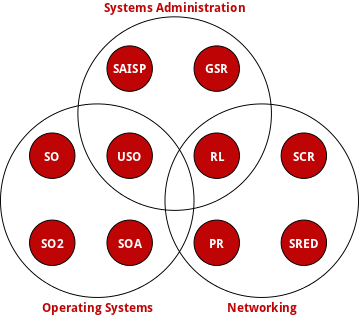

Bachelor Courses
 | Operating Systems Usage This course introduces 1st year students into Operating Systems Usage. Linux is being used as a platform for introducing Operating Systems concepts such as processes and files. |
 | Computer Networks This course aims at helping students understand the design and inner working of Computer Networks. |
 | Operating Systems This course aims at helping students understand Operating Systems better. |
 | Operating Systems Design This course aims at helping students understand the internals of Operating Systems. |
 | Network Design This course introduces students to Network Design concepts such as switching and routing. |
Master Courses
 | Network Services Management This course presents global configuration options for Internet services (web, e-mail, DNS, FTP, remote access) and places accent on important security features that need to be implemented before the services are released. |
 | Operating Systems Practical This course presents advanced concepts in operating systems as they are explored in research publications. |
 | Computer Network Security This course aims at providing a set of tools for vulnerability assessment and security calibration both at the network and at the operating system level. |
 | Securing Computers and Networks This course teaches network administrators how to secure network devices such as routers and switches. |
 | Advanced ISP Services This course focuses on the integration of advanced system services components and on the service reliability and scalability |
 | Securing Networks with Dedicated Devices This course focuses on the planification, implementation and configuration of a secure, scalable, redundant and convergent network using dedicated firewalls and Unified Threat Management |